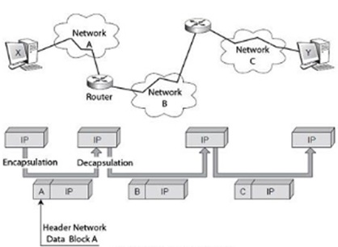
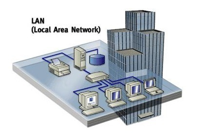
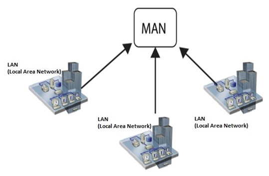
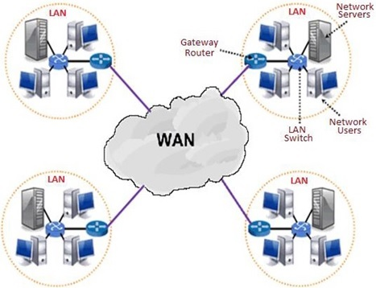
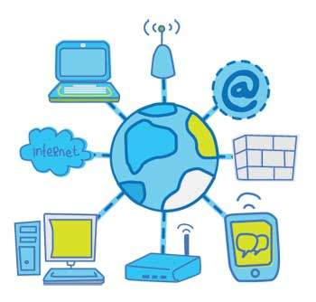

A Computer Network is a collection of interconnected devices (like computers, smartphones, and printers) that communicate with each other to exchange data and share resources.

Networks are usually classified by the physical area they cover:
A very small network connecting personal devices within a range of about 10 meters. Example: Connecting wireless headphones to a smartphone via Bluetooth.

Connects computers within a limited area, such as a home, a school lab, or an office building. It provides high-speed connection and is easy to set up.

Covers a larger area than a LAN, typically a city or a large college campus. It connects multiple LANs together.

Covers large geographical areas, connecting networks across countries or even continents. WANs use telephone lines, fiber optics, or satellites.
The Internet is the largest WAN in the world. It is literally a "network of networks" that connects millions of private, public, academic, business, and government networks globally.
